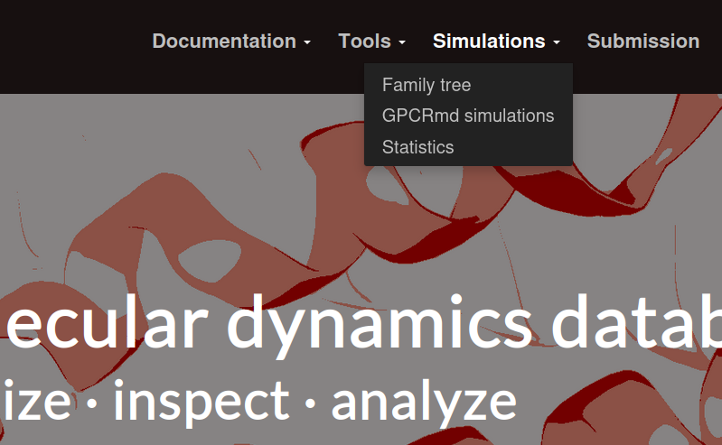
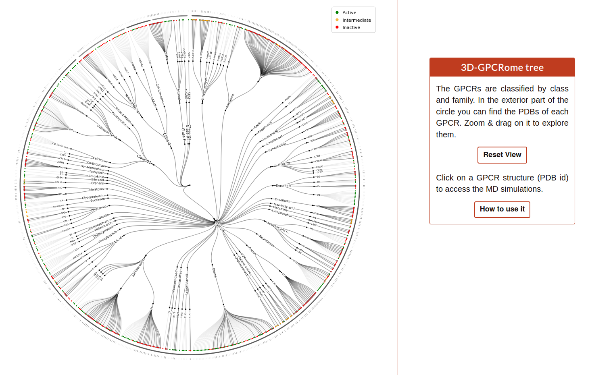
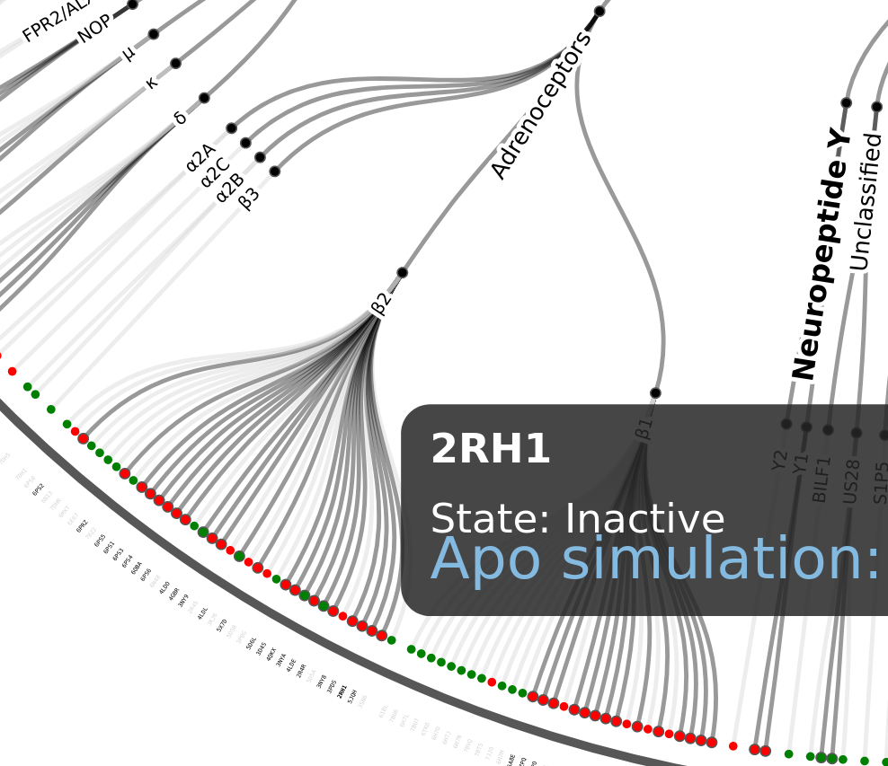
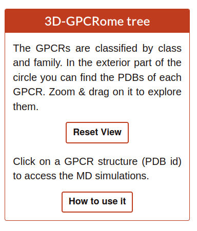
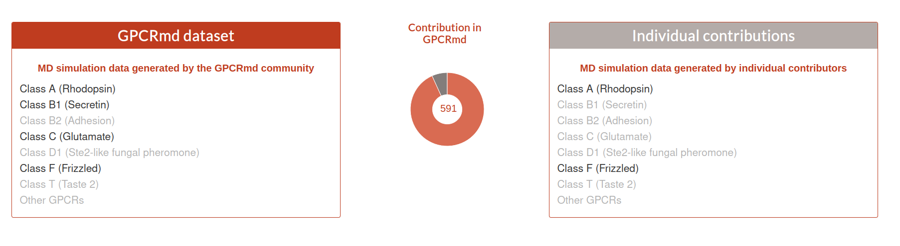
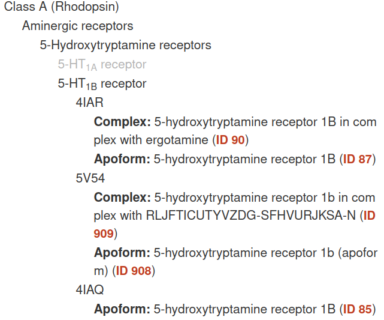
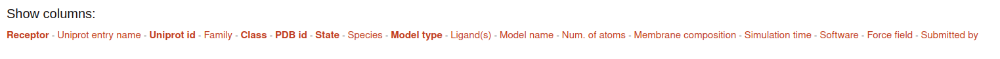
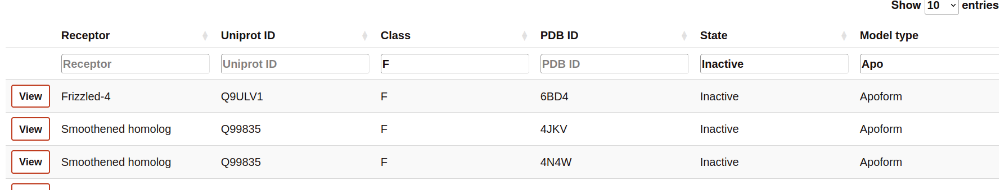

Simulation Browser
The simulation browser system englobe all the options found on the Simulations block:
{kind=link}
Family tree
The Family tree is a visual representation of each GPCR family and subfamily ending on a pdb identifier.
{kind=link}
The user can zoom in/out and drag around the tree. If the user hover on each pdb identifier the graph will display a box with all the simulations related to this code:
{kind=link}
Clicking in the blue link the user will be redirected to the GPCRmd viewer. In case that the user wants to restore the position, only need to click on the button “Reset view” on the box next to the tree:
{kind=link}
GPCRmd simulations
Here, the user can identify all simulations included into GPCRmd divided into two datasets: GPCRmd community contributions and individual contributions.
{kind=link}
Each simulation is classified into each class, family and subfamily. Similar than the Family tree but grouped. The user can expand each of these groups until get the simulations related to a specific family. To view the simulation the user can click on the red text link (e.g. ID 90).
{kind=link}
Search
The Search tool is divided into 3 parts:
Filter
Browser
List of simulated systems
{kind=link}
Filter
This part of the Search contains the name of all the columns available to be displayed in the search table. The user can select or deselect the columns that it wants to be displayed into the table. In the next example the user select the columns: Uniprot id, Class, PDB id, State, Species, Model type and Num. of atoms.
{kind=link}
Browser
The Browser provides to the user filter everything that it is written in the cell.
{kind=link}
List of simulated systems
The table rows contain a summary of the most important features of the simulations. This includes links o further details of the receptor and molecules present in the simulated system.
Clicking on “View” to visualize and analyze the simulation.
Clicking on “Report”, you will access the details of the system setup and simulation protocol, as well as links to download the simulation data.